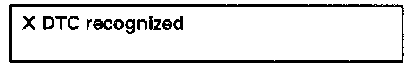

Check DTC Memory (Function 02)
Special tools, testers and auxiliary items- VAG 1551/1552 scan tool with VAG 1551/3 adapter cable.
Work sequence:
- Connect VAG 1551/1552 scan tool and select "Engine Electronics" address word 01 Connecting and Selecting "Engine Electronics" address word 01. When doing this the engine must be running at idle speed.
NOTE: If engine does not start, operate starter for approx. 6 seconds and then do not switch ignition off.
- Switch printer on with PRINT button (warning lamp in button lights up).
Indicated on display
- Press buttons -0- and -2- to select "Check DTC Memory" function 02 and press -Q- button to confirm input.

The number of malfunctions stored or "No DTC recognized" will be shown on the display.
NOTE:
If something different is indicated on the display: See VAG 1551 scan tool operating instructions.
If one or more malfunctions are stored, the malfunctions stored will be displayed and printed out one after the other.
- Locate and eliminate malfunctions printed out as per Diagnostic Trouble Code (DTC) table. Diagnostic Trouble Code Descriptions
NOTE: If no malfunction is stored:
- Press -> button.
Indicated on display
- Press buttons -0- and -6- to select "End Output" function 06 and press -Q- button to confirm input.
- Erasing DTC memory. Erase DTC Memory (Function 05)
NOTE: If a malfunction is present which is not recognized by On Board Diagnostic (OBD), perform further diagnosis using "Electrical Wiring Diagrams".